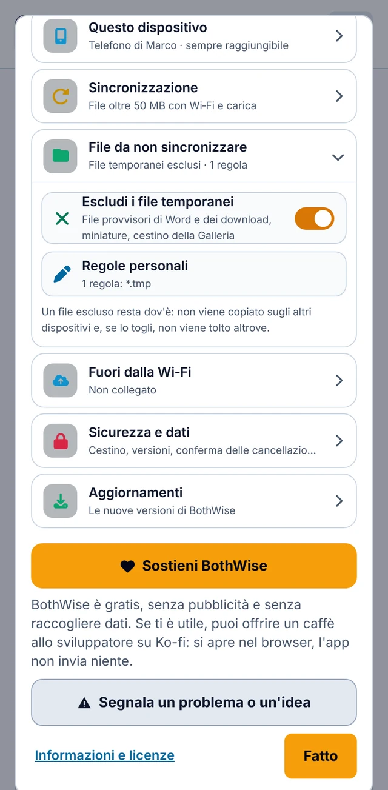
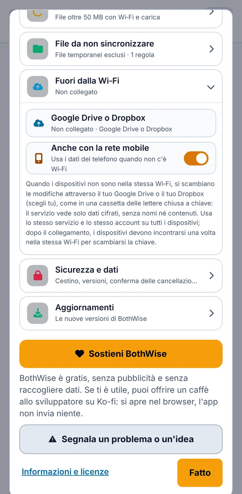
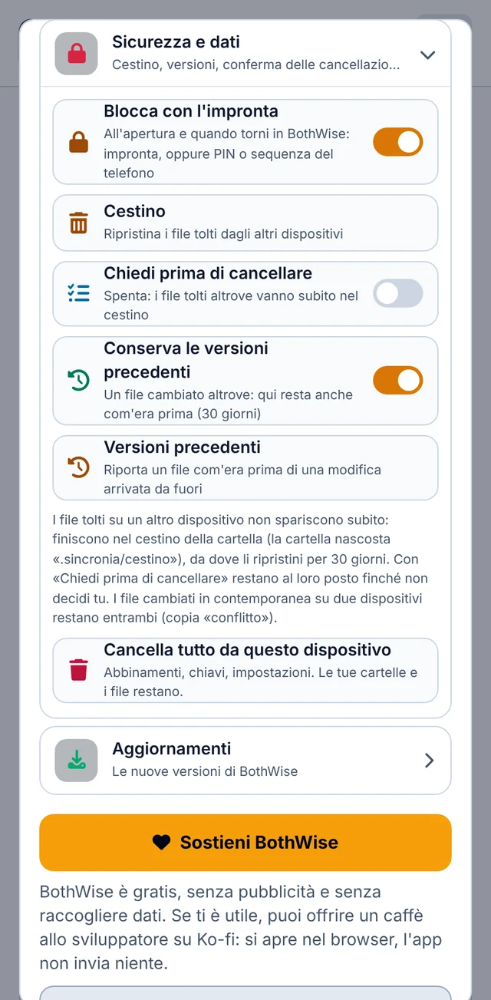

BothWise
Le tue cartelle, uguali su tutti i tuoi dispositivi.
I file passano direttamente da un dispositivo all'altro, cifrati, senza cloud e senza account. Anche da lontano, con il tuo Google Drive o Dropbox.
- Gratis
- Open source
- Senza account
- Funziona offline
- Android 10+



Cosa sa fare
Da dispositivo a dispositivo
Nella stessa Wi‑Fi i file viaggiano direttamente tra i tuoi telefoni e tablet, con collegamento cifrato. Nessun server in mezzo.Nella stessa Wi‑Fi i file viaggiano direttamente tra i tuoi telefoni e tablet, con collegamento cifrato.
Anche fuori casa
Fuori dalla Wi‑Fi puoi sincronizzare tramite il tuo Google Drive o Dropbox. Sul cloud finiscono solo file cifrati.Fuori dalla Wi‑Fi puoi sincronizzare tramite il tuo Google Drive o Dropbox.
Non perdi mai un file
Cestino e versioni precedenti per 30 giorni. Se due dispositivi modificano lo stesso file, scegli tu cosa tenere: niente viene cancellato.Cestino e versioni precedenti per 30 giorni.
Protezioni automatiche
L'app ti ferma e ti avvisa prima di cancellazioni di massa, cartelle sparite o modifiche sospette.L'app ti ferma e ti avvisa prima di cancellazioni di massa, cartelle sparite o modifiche sospette.
Gestisci le cartelle dall'app
Sfoglia, apri, rinomina, sposta, elimina, aggiungi e condividi i file senza uscire da BothWise.Sfoglia, apri, rinomina, sposta, elimina, aggiungi e condividi i file senza uscire da BothWise.
Invia un file a un dispositivo
Mandi un singolo file a un dispositivo preciso, in stile AirDrop, con la richiesta di conferma a chi lo riceve.Mandi un singolo file a un dispositivo preciso, in stile AirDrop, con la richiesta di conferma a chi lo riceve.
Orari e limite di velocità
Scegli quando sincronizzare e quanta banda usare, per non appesantire la rete.Scegli quando sincronizzare e quanta banda usare, per non appesantire la rete.
Blocco con impronta
Apri l'app solo con l'impronta digitale o il blocco schermo.Apri l'app solo con l'impronta digitale o il blocco schermo.
Italiano e inglese
Guida e tutorial integrati nell'app, in due lingue.Guida e tutorial integrati nell'app, in due lingue.
Guarda come funziona
Brevi filmati, senza audio.
Abbinare i dispositivi
Sincronizzazione
Mai perdere un file
Come si inizia
- InstallaScarica BothWise su ogni dispositivo che vuoi collegare.
- AbbinaSu un dispositivo mostra il QR, sull'altro inquadralo (o scrivi il codice).
- Scegli le cartelleIndica cosa sincronizzare. Da quel momento le cartelle restano uguali.
Domande frequenti
Serve internet?
No: nella stessa Wi‑Fi i dispositivi si trovano da soli. Internet serve solo se vuoi sincronizzare da lontano tramite Drive o Dropbox.
Chi può vedere i miei file?
Solo i dispositivi che hai abbinato tu. Sul cloud, se lo usi, i file sono cifrati e illeggibili per il fornitore.
Quanto costa?
Niente. Le app sono gratuite, senza pubblicità e senza acquisti. Se ti sono utili puoi offrire un caffè su ko-fi.com/crslabs.
Dove finiscono i miei dati?
Restano sul tuo dispositivo. CrsLabs non ha server e non raccoglie nulla. I dettagli sono nell'informativa sulla privacy.
Come si installa e come si aggiorna?
Scarica il file dalla pagina «Release» su GitHub e aprilo: Android ti chiederà di consentire l'installazione da quella fonte. Gli aggiornamenti successivi ti vengono proposti dentro l'app e si installano sopra la versione vecchia, senza perdere i dati.
Qualcosa non funziona o ho un'idea.
Scrivi a crslabs.info@gmail.com oppure usa «Segnala un problema o un'idea» dentro l'app.